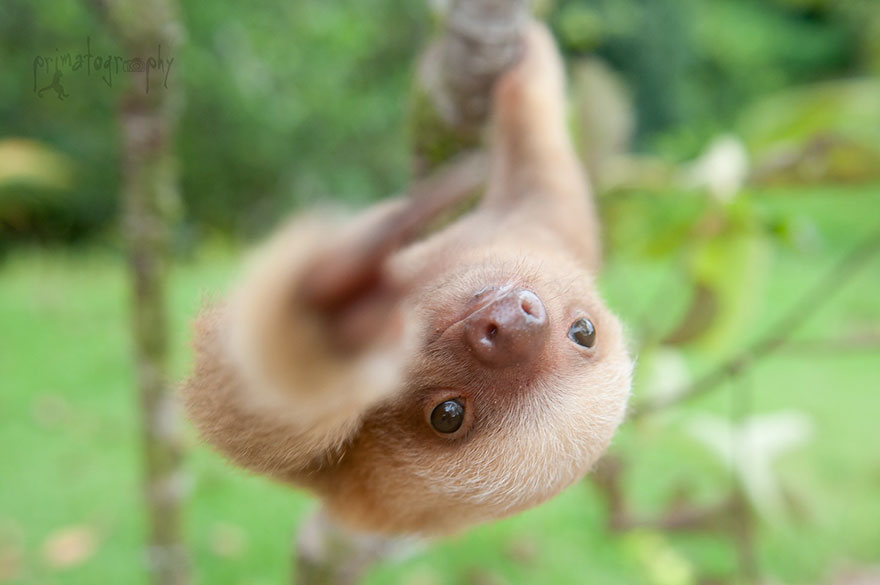

Over de Luiaard

Luiaards (Folivora of Phyllophaga) vormen een onderorde van middelgrote Zuid-Amerikaanse zoogdieren waarvan tegenwoordig nog twee families bestaan: tweevingerige luiaards (Megalonychidae) en drievingerige luiaards (Bradypodidae). De onderorde maakt deel uit van de orde van luiaards en miereneters. Luiaards zijn herbivoren en eten weinig anders dan bladeren.
Luiaards hebben een boomklimmende levensstijl. Bladeren, hun belangrijkste voedselbron, leveren weinig energie en worden niet gemakkelijk verteerd: luiaards hebben daarom een zeer grote, gespecialiseerde maag met meerdere delen waarin symbiotische bacteriën de stugge bladeren afbreken. Luiaards kunnen ook insecten, kleine hagedissen en kadavers eten. In vochtige omstandigheden bevat hun vacht bacteriën die voor camouflage kunnen zorgen. De vacht is meestal (diep) bruin, maar sommige in het wild levende luiaards hebben een groenige tint dankzij de aanwezigheid van de bacteriën. De pels van zo'n luiaard is een ecosysteem op zich. Algen en bacteriën hebben zich tussen de haren genesteld en geven zijn vacht die typische groenige tint. De schutkleur beschermt het langzame dier tegen arenden en andere roofdieren.
De luiaard verdedigt zich met zijn klauwen wanneer hij in gevaar is. Dat is zijn enige defensiemechanisme. De luiaard is voornamelijk kwetsbaar op de grond. Wanneer ze in een boom hangen vallen ze bijna niet op omdat ze zo traag bewegen.
Een luiaard loopt op de grond niet sneller dan 2,5 meter per minuut. Over een afstand van een kilometer zou hij ruim 6,5 uur doen.
Luiaards in het wild slapen iets minder dan 10 uur per dag.
Homepage